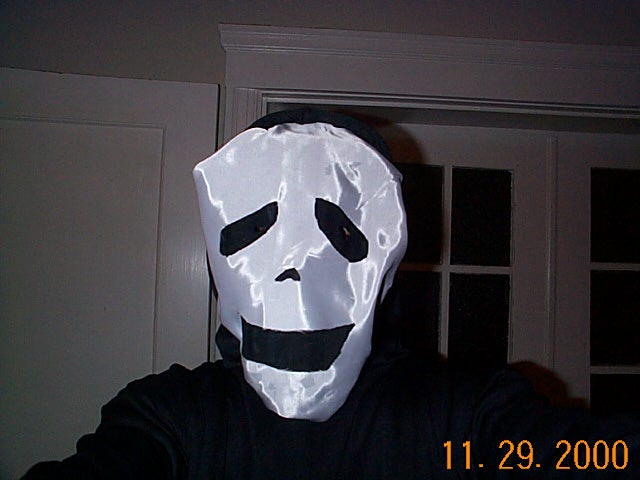

| Marcus losing his lungs trying to inflate the pumpkin ice box. We had already fixed the pump by then but we thought it was more fun to just watch him pant and turn blue. | ||
Elliot and Diane lived up to their reputation for this occasion. This is just an overview of the whole set-up they installed in the building. Spider webs, scary CDs, overhanging spiders, flying bats, skeletons hanging on a chain, smoke screens, etc... all contributed to make even climbing up the staircase a true adventure in itself. |
||
The flying bat was definitely the highlight prop. This little buddy can turn in circles just by flapping his wings. Unfortunately, his fragile mechanism led him to an untimely demise before the party even began. |
||
As for my own costume, I wanted to be a Ghostface. But not just any Ghostface: the one featured in Scary Movie (the pot scene, remember?). Finding a generic Ghostface costume was pretty easy. The hardest part was to come up with two major additions:
|
||
Okay, that was just a wig from Elliot's past Halloween props. The real challenge still lay ahead. There was no way I could modify the plastic mask I got, so I had to buy some white fabric and try to draw the face myself. Given how pathetic I am at drawing in general and how hard it was to find a model of the smiling Ghostface on the Internet, it comes as no surprise that I didn't really succeed. While the face itself looks okay on a flat surface: |
||
... it tends to wrap on my face when I'm wearing it, and then loses all expression: |
||
|  | ||
| I did end up wearing it on and off, though, if only to sniff all the glue I had used to keep the whole damn thing together. |